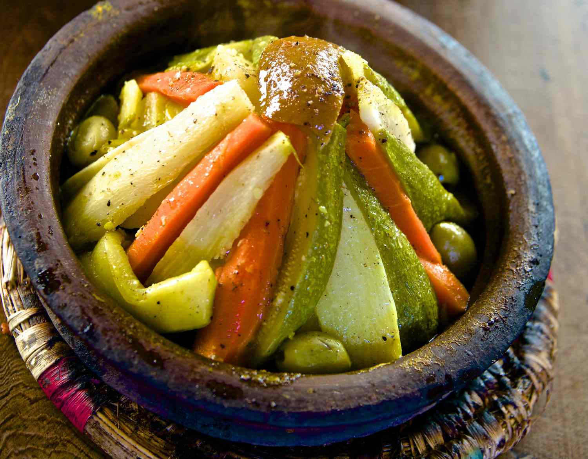

Moroccan Tajine
Moroccan Tajine

Flavourfull Vegetarian Tajine
Tajines are simply delicious but in the most cases they're made with meat.
Well, this one isn't and is just as falvourfull as the others.
Unfortunately you need a tajine to make a tajine. And to heat up your tajine
you will also need a gas stove. I guess there are also other options but this is
the way I prepared my Tajine in Morocco.
Ingredients
- Oil
- Onions
- Ras el-hanout
- Potatoes
- Tomatoes
- Carrots
- Herbs
- Zucchini
Steps
- First dice the onion and slice the vegetables.
- Add some oil to the bottom of the tajine but dn't cook it yet.
- Then you can add the dices tomatoes and the Ras el-hanout.
- Now you have to build a kind of tent with the vegetables over the tomatoes.
- Drizzle with oil.
- Bring your tajine to a heat.
- Now you simply have to wait while the tajine is cooking.
- After around one hour you can add the herbs.
Back home